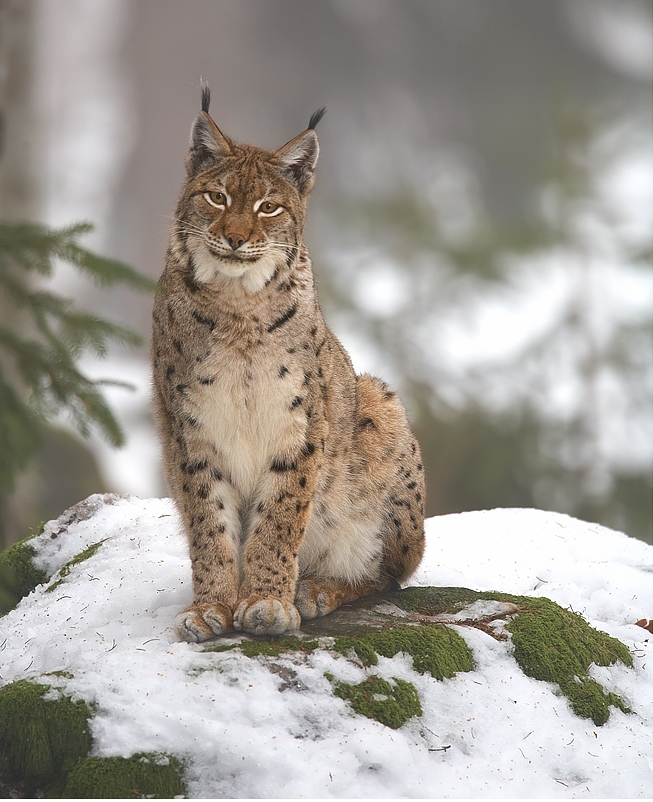

Рись євразійська
Рись євразійська

Рідкісний вид родини котових, який в Україні зустрічається переважно в Карпатах та на Поліссі. Головна загроза — знищення лісів та браконьєрство. Рись віддає перевагу глухим темнохвойним лісам, тайзі, хоча зустрічається в різноманітних насадженнях, включаючи гірські ліси; іноді заходить в лісостеп і лісотундру. Вона відмінно лазить по деревах і скелях, добре плаває.